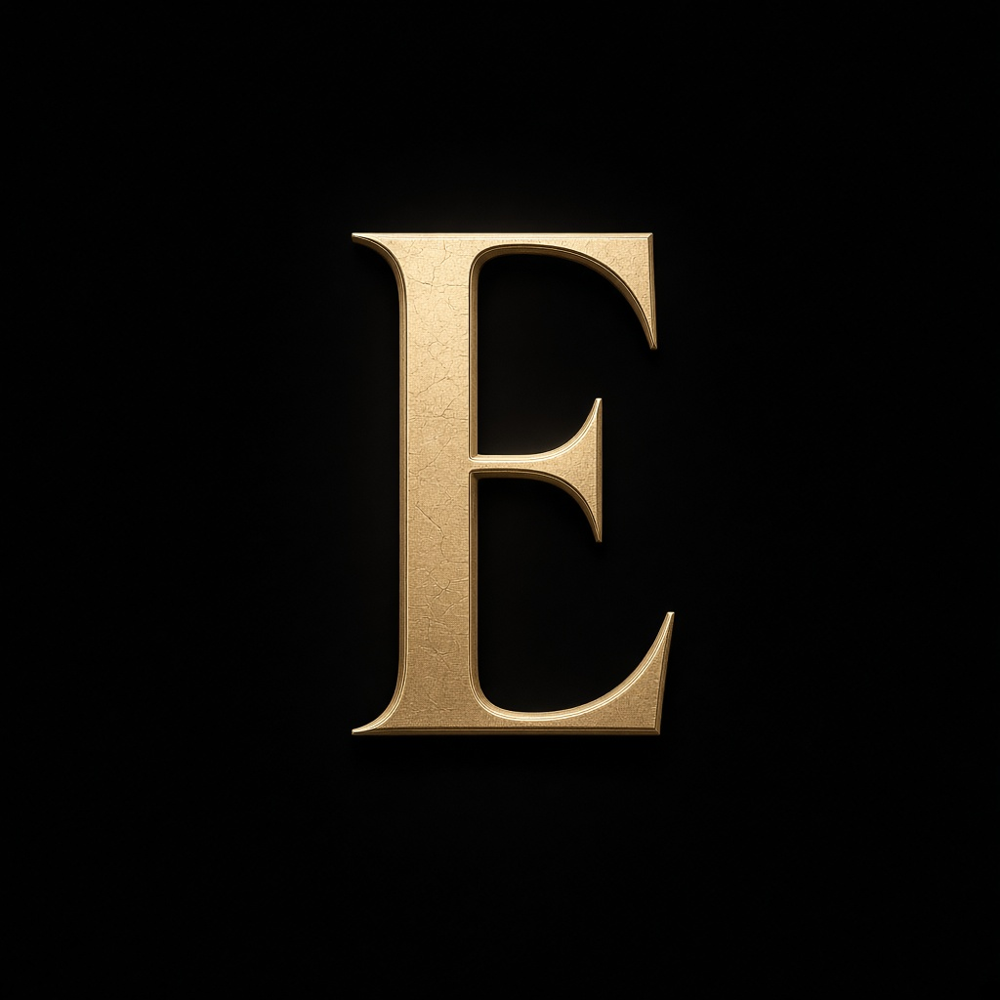

Luxo
Matéria-prima rara, luz champanhe e o recuo do excesso.
Identidade
O E entra no nome. O terno permanece. Juntos, no plural, formam a casa: Eternos.

O trocadilho
Há marcas que se escrevem. A Eternos se lê em voz alta: o E destacado, como quem aponta o essencial, e ternos — a peça que define o homem social, agora no plural de uma casa inteira.
Luxo aqui não é excesso. É corte, silêncio, tecido e a certeza de que o tempo não apaga o que foi bem feito.
Conceito
Matéria-prima rara, luz champanhe e o recuo do excesso.
Alfaiataria que se prova, se ajusta e se guarda por décadas.
O detalhe invisível: forro, botão, gravata, o brilho do Oxford.
A recusa do grito. A escolha do que permanece.
Linha do tempo
O nome nasce do E em destaque — o artigo da elegância — somado aos ternos, no plural de uma vocação.
A primeira casa abre no Batel, bairro que já veste a cidade com cerimônia.
A segunda casa chega ao Juvevê, com atelier de medidas e consultoria.
A terceira casa encontra o ritmo do Água Verde — social e esporte fino no mesmo corredor.
A quarta casa no Centro de Curitiba aproxima a marca de quem vive o centro da cidade.